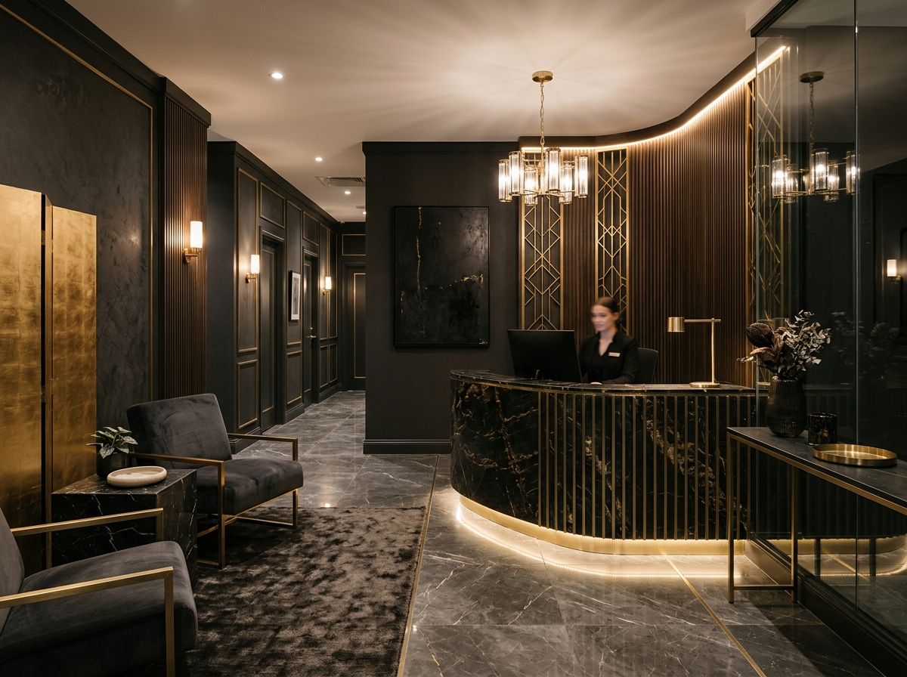

강남 신사 · 성형외과
자연스러움은 결에서 나옵니다
한 번에 많이 바꾸지 않습니다.
충분히 듣고, 필요한 만큼만 말씀드립니다.
상담실에서 가장 오래 쓰는 도구는 메스가 아니라 질문입니다.
시술
의료진
대표원장 김결
- 성형외과 전문의
- 강남 진료 15년
- 수술 전 상담은 원장이 직접
※ 샘플 문구입니다. 실제 병원의 약력과 사진으로 바뀝니다.

기다리는 시간도 진료의 일부라고 생각합니다.
궁금한 점부터
편하게 물어보세요
- 진료
- 평일 10:00 – 19:00 · 토 10:00 – 15:00
- 위치
- 서울 강남구 신사동 (샘플 주소)